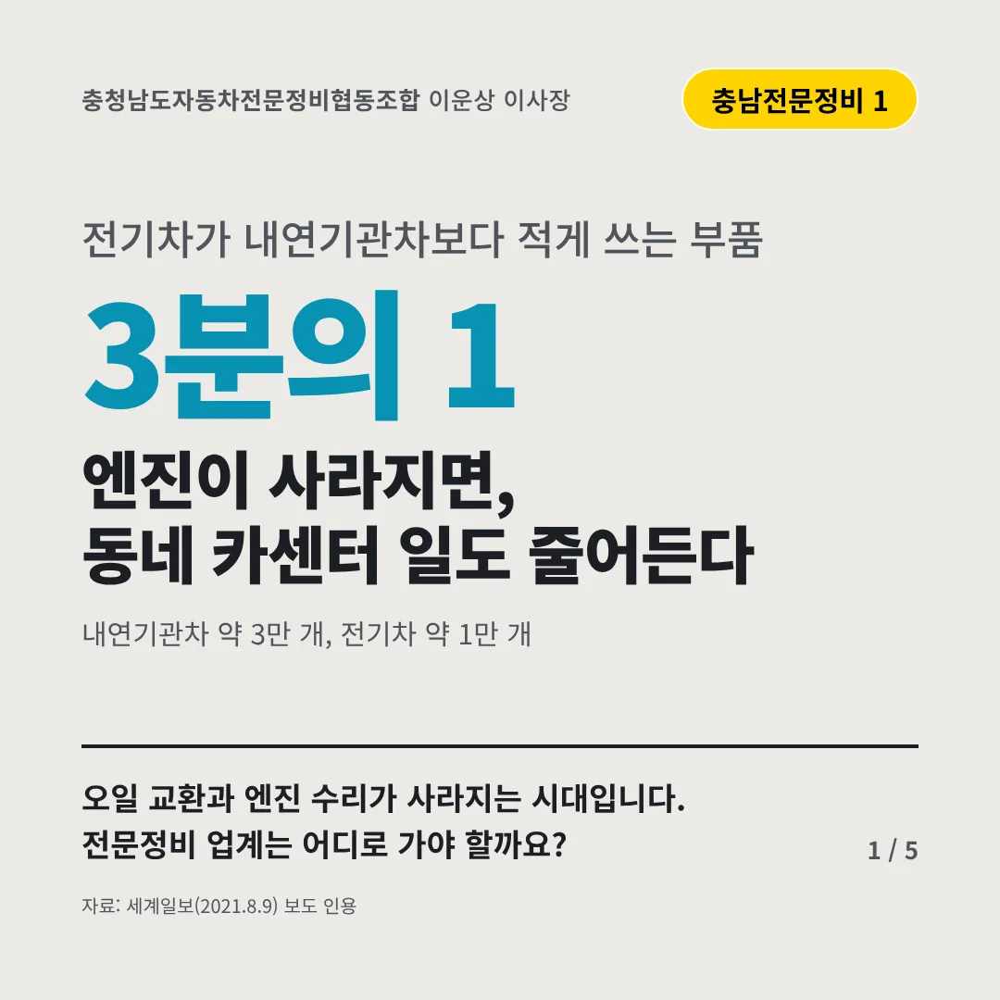
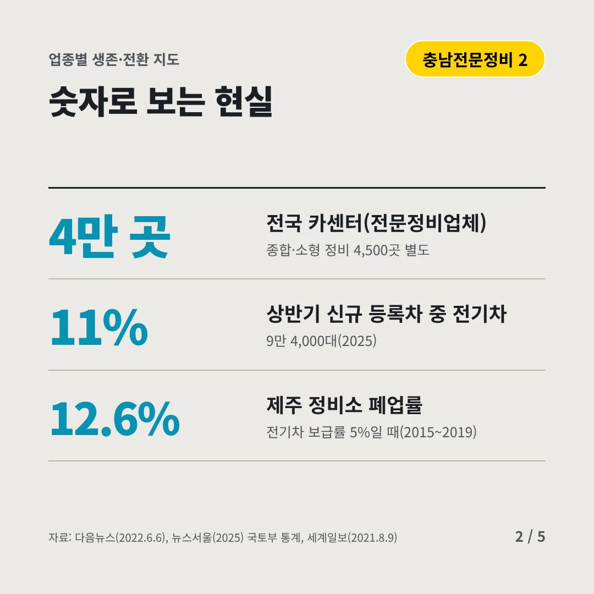
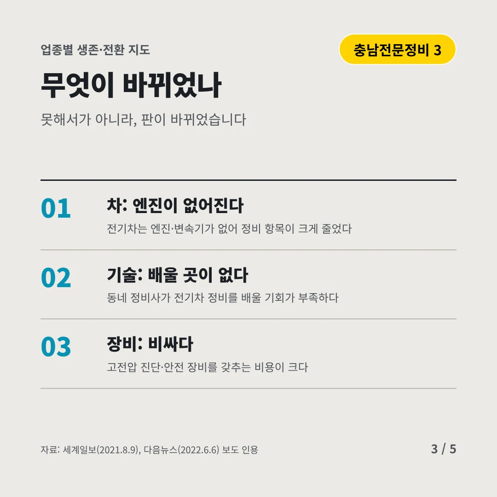
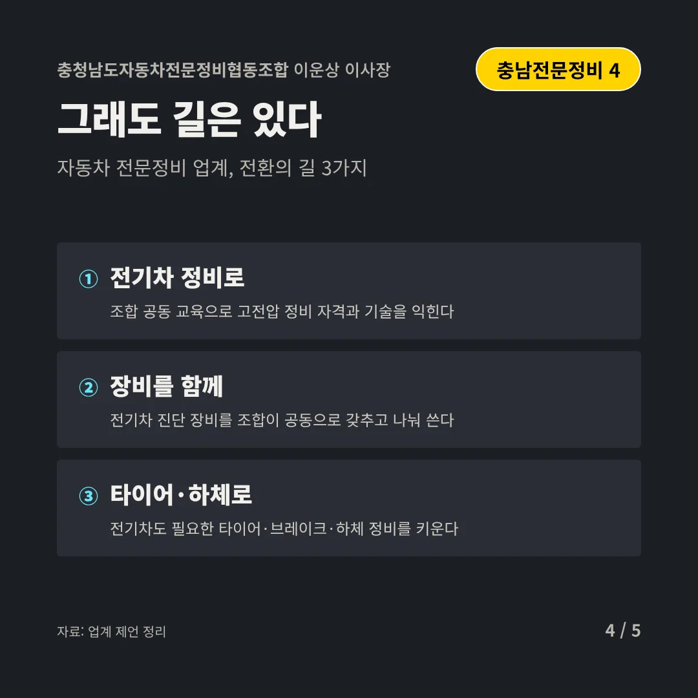
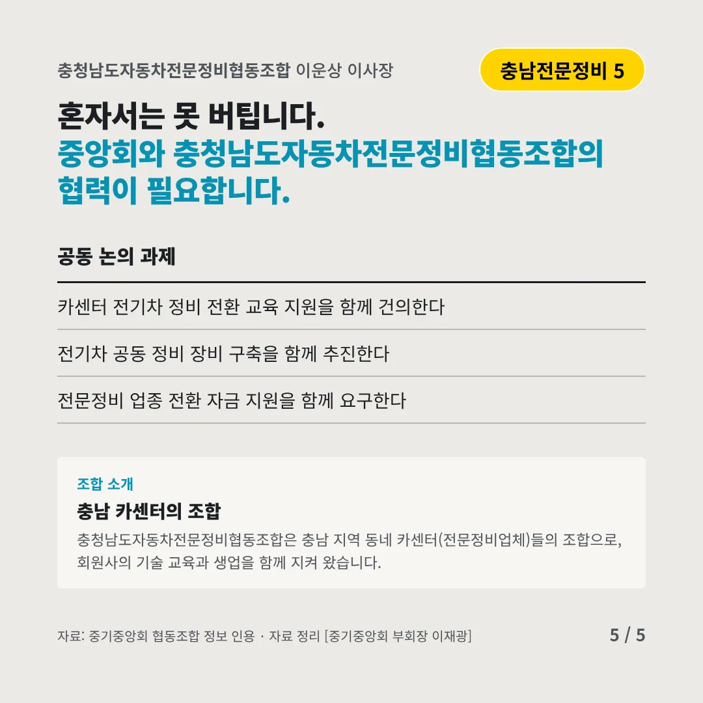
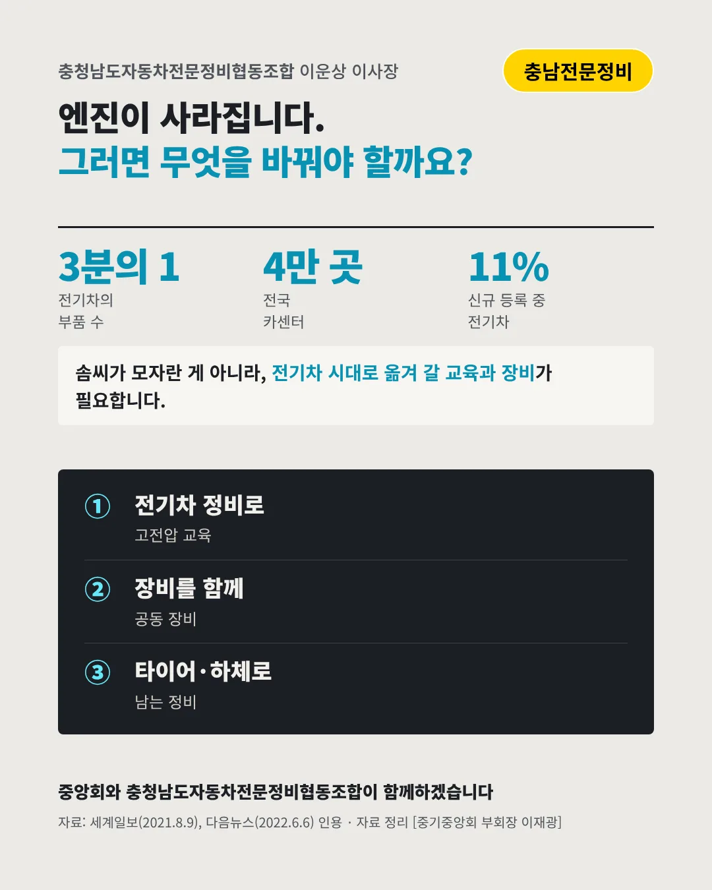

충청남도자동차전문정비협동조합
엔진이 사라지면, 동네 카센터 일도 줄어든다
3분의 1 전기차가 내연기관차보다 적게 쓰는 부품






오일 교환과 엔진 수리가 사라지는 시대입니다. 전문정비 업계는 어디로 가야 할까요?
숫자로 보는 현실
- 4만 곳전국 카센터(전문정비업체)종합·소형 정비 4,500곳 별도
- 11%상반기 신규 등록차 중 전기차9만 4,000대(2025)
- 12.6%제주 정비소 폐업률전기차 보급률 5%일 때(2015~2019)
무엇이 바뀌었나
- 차: 엔진이 없어진다전기차는 엔진·변속기가 없어 정비 항목이 크게 줄었다
- 기술: 배울 곳이 없다동네 정비사가 전기차 정비를 배울 기회가 부족하다
- 장비: 비싸다고전압 진단·안전 장비를 갖추는 비용이 크다
그래도 길은 있다
- 전기차 정비로조합 공동 교육으로 고전압 정비 자격과 기술을 익힌다
- 장비를 함께전기차 진단 장비를 조합이 공동으로 갖추고 나눠 쓴다
- 타이어·하체로전기차도 필요한 타이어·브레이크·하체 정비를 키운다
한 장 요약

조합 소개
충청남도자동차전문정비협동조합은 충남 지역 동네 카센터(전문정비업체)들의 조합으로, 회원사의 기술 교육과 생업을 함께 지켜 왔습니다.
자료: 세계일보(2021.8.9), 다음뉴스(2022.6.6), 뉴스서울(2025)